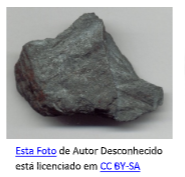
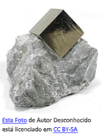
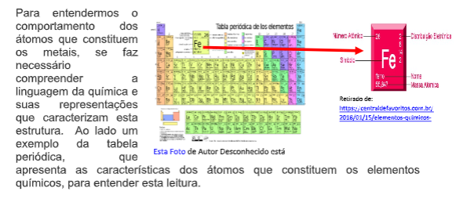
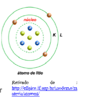
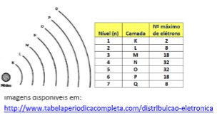
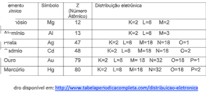
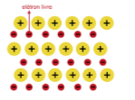
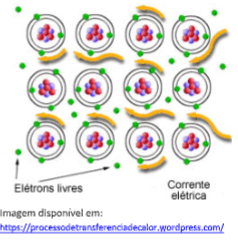
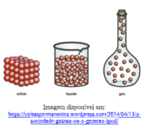

Capítulo 1
As constantes da metalurgia
Que situações necessitam de velocidade constante na indústria metalúrgica? Onde podemos observar estas situações?
CONTEXTUALIZANDOA demanda produtiva, exige uma constante nas operações industriais, selecionar os insumos preparar a linha de produção e por fim realizar o processo produtivo. Alia-se a tudo isso a constante necessidade dos produtos por parte dos consumidores. Imagine então as situações em que se produz chapas de aço ou barras deste mesmo material. Pensar nestes contexto requer conhecimento que de cera forma se relacionam com alguns conceitos de movimento da Física. Logo pensar nestes conceitos aplicado pode ser de grande valia ao relacionar com o setor produtivo. Os movimentos produtivos que nos interessam agora são o que garantem uma constante, mais especificamente os movimentos em que se garanta velocidades constantes.
Abaixo seguem algumas imagem do setor metalúrgico que de alguma maneira se relacionam com a ideia de velocidade constante.
 (Re)construindo conceitosOs movimentos produtivos da metalurgia que necessitam de uma constância, adotaremos como movimentos os que a velocidade deve permanecer inalterada.
Agora que temos conhecimento do conceito de referencial, posição, deslocamento e velocidade podemos pensar em numa classificação para movimento com velocidade constante. Basearemos o desenvolvimento dos conceitos em sempre com  questionamentos.
1ª pergunta: Como devemos pensar em movimentos que se afastam de nosso referencial com velocidade constante?Para responder a esta situação sempre devemos pensar em qual referencial nos é dado. Por exemplo:
Um caminhão que parte da expedição para um cliente. Se adotarmos que a referência é a expedição podemos dizer que lá é a posição inicial(S i ) e que o cliente é a posição final (S f ). Abaixo uma representação desta situação:
 2ª pergunta: Como representamos matematicamente estes tipos de movimentos que se afastam do referencial?Para responder a esta pergunta vamos dar valor a posição inicial e supor uma velocidade constante ao caminhão que sai da expedição e vai fazer a entrega de aço a um cliente igual a 80km/h, e investigar como ele muda a posição com base em sua velocidade, esta investigação se dará para as três primeiras hora de movimento, o que e suficiente para chegarmos a uma conclusão a respeito Esta Foto de Autor Desconhecido está licenciado em CC BY-SA da representação matemática para este tipo de movimento com velocidade constante.
Ao observa a tabela pode-se perceber que para o tempo igual a 1 hora a posição final igual a 80km é resultado pois na seguinte ordem de operação:
1-Multiplicamos a velocidade pelo tempo que é igual a 80x1 que dá 80;
2- Somamos o resultado da multiplicação com a posição inicial que é 0km.
3 - obtemos o resultado da soma que é 0+80 = 80km
Para os tempos iguais a 2h e 3h fizemos o mesmo raciocínio, de modo que:
Para 2h : 0+(80x2) = 160km
Para 3h: 0+(80x3) = 240km



